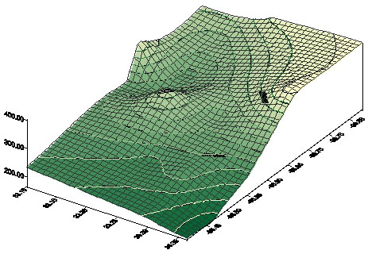

 |
These materials were developed by Lance Christian, Department of Geography, University of Texas at Austin, 1998. These materials may be used for study, research, and education in not-for-profit applications. If you link to or cite these materials, please credit the author, Lance Christian, The Geographer's Craft Project, Department of Geography, The University of Colorado at Boulder. These materials may not be copied to or issued from another Web server without the author's express permission. Copyright © 1998. All commercial rights are reserved. If you have comments or suggestions, please contact the author or Kenneth E. Foote at k.foote@colorado.edu.
Groundwater was recognized thousands of years ago
and was utilized by the ancients through springs and wells. The source
of groundwater, however, puzzled early scientists for centuries. Early
theories by the philosphers proposed groundwater replenishment from the
seas through "underground rivers" flowing inland, while percolation through
the soils filtered the salts from the seawater. During the seventeenth
century, two French scientists, P. Perrault and E. Mariotte, established
the plausibility of continental precipitation as the source of recharge
for groundwater reservoirs. Through experimental measurements of the Seine
River they demonstrated that the annual discharge from the river was less
than 1/6th of the annual precipitation in its catchment (Long, 1974, p.463).
Where was the rest of the water going? Infiltration into the earth was
theorized to account for the remaining precipitation, as well as, provide
an alternative source of groundwater recharge. In 1856, modern studies
of groundwater began with a French engineer named Henri Darcy "who was
commissioned to develop a water-purification system for the city of Dijon,
France". (Long, 1974, p.466) He constructed the first experimental apparatus
to study the flow characteristics of water through the earth. From his
experiments, he derived an equation known as Darcy's Law. This law
describes the flow of water in nature and has become one of the fundamental
building blocks in understanding groundwater systems.
Many different rock types may comprise an aquifer.
In the Hawaiian islands, volcanic rocks provide a source of water while
in the Texas Panhandle, the Ogallala sandstone provides millions of gallons
a year for farming irrigation. Conglomerates may also comprise aquifers,
but many of the most prolific aquifers occur in limestones. Large reserves
of groundwater are stored in limestone aquifers in Florida and the Edwards
Aquifer of Central Texas.
Geology of the Study Area
Geologically speaking, north Texas is a relatively undisturbed straight stratigraphic column. Figure 2. is a cross-sectional diagram showing the underlying stratigraphy of the study area. The stratigraphy, or the division of the rocks into distinct units, is a time constant column without any major 'interruptions' or erosional events. It contains all of the representative rock units (or their age equivalents) known in Texas from the Cretaceous Period which is a unit of time from approximately 65 to 140 million years ago. Beneath the Cretaceous rocks lies a basement of older rocks from the Pennsylvanian and Permian Periods of the Paleozoic Era.
The Woodbine Sandstone is composed of fine-grained, cross-stratified fluvial sandstone interbedded with overbank deposits of clay and shale. (Hopkins, 1996) The unit dips eastward reaching a depth of 2,500 feet below the land surface while the regional dip is southeastward averaging approximately 35 feet per mile. Near the boundary of fresh to slightly saline water in the eastern portion of the aquifer, the dip of the rock unit increases to 75 feet per mile. The sandstone thickens both downdip and to the northeast achieving thicknesses of approximately 230 feet in the southern extent of the outcrop to 700 feet in the northeast. (Hopkins, 1996) Figure 2.
The aquifer is divided into three water-bearing zones
in the northern segment of the outcrop. Each zone varies significantly
in productivity and quality, and only the lower two zones are being utilized
for domestic and municipal water supplies. The upper zone often yields
water with concentrations of iron that are too high to be a usable supply.
Further to the east (and some to the south) the Woodbine produces both
oil and gas. (Hopkins, 1996)